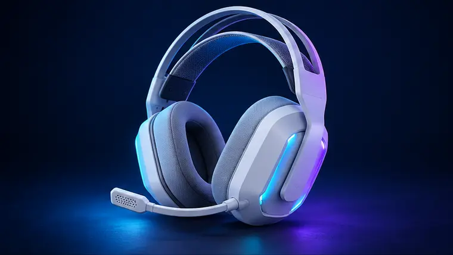
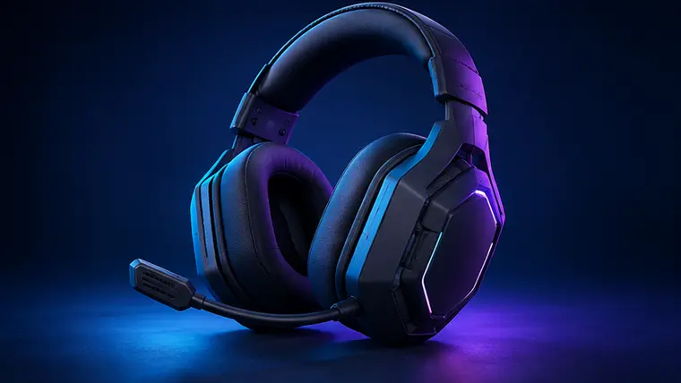

Under £100, comfort and consistency beat unnecessary features.
Updated October 2026 · 6 min read
This guide is research-led. We compare specifications, compatibility and recurring owner feedback; we do not claim hands-on testing where none occurred.
Choose for your real use case first, then compare features. Avoid paying for a specification you will not notice.
Check your platform
3.5 mm is broadly compatible. USB and wireless features can vary between PC, PS5 and Xbox.
Comfort comes first
Look at clamp force, ear-cup depth and replaceable pads—especially for glasses.
Microphone expectations
A boom mic is convenient for chat, but a separate USB microphone usually sounds better.
Our current shortlist

Comfort-first wired
HyperX Cloud III
A practical wired headset for long PC and console sessions.
- Who it suits is explained clearly
- Current price shown on Amazon

Versatile wireless
SteelSeries Arctis Nova 5
A multi-platform option for buyers who switch between devices.
- Who it suits is explained clearly
- Current price shown on Amazon
PS5-friendly wireless
Sony INZONE H5
Lightweight wireless audio designed with PC and PlayStation in mind.
- Who it suits is explained clearly
- Current price shown on Amazon

Premium wireless
Logitech G PRO X 2 LIGHTSPEED
A higher-end pick focused on strong battery life and build quality.
- Who it suits is explained clearly
- Current price shown on Amazon